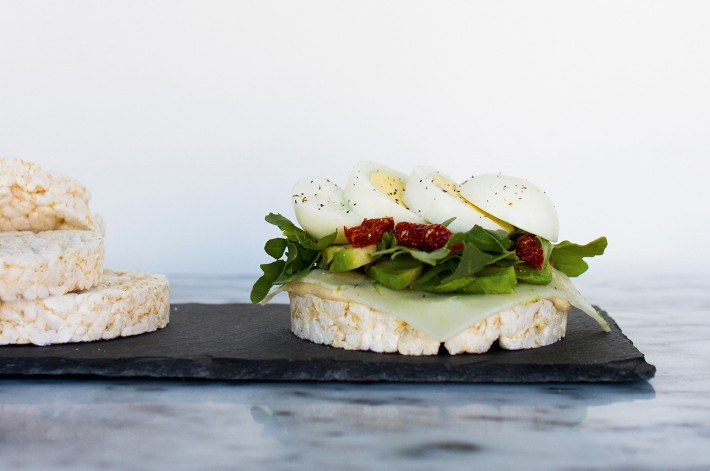

Rijstwafeltaartjes
Dit gehaktbrood kan prima bij een avondgerecht, maar is ook een makkelijk gerecht voor een buffet.
Ingrediënten
- Zongedroogde tomaatjes
- Hummus
- Rucola
- 1 avocado
- 1 ei (gekookt)
- Geitenkaas
- 4 rijstwafels/ maiswafels/ quinoawafels/ boekweitcrackers/ kastanjemeelcrackers (biowinkel)
- Peper
- Zout
- Kokosvet (in plaats van boter, rauw op je cracker)
- 1 theelepel tabasco
- Pijnboompitten (optioneel)
Bereidingswijze
- Smeer je cracker (zowel de boven- als onderkant) in met hummus of kokos-vet (gebruik ik als boter). Gebruik veel hummus (de glycemische index van rijstwafels is hoog dus je hebt vet en/of eiwitten nodig om de bloedsuiker-spiegelstijging te beperken).
- Leg op de hummus een plakje geitenkaas met eventueel wat pijnboompit-jes.
- Snijd de avocado in plakjes en leg deze op de geitenkaas. Nu wat rucola.
- Leg daar bovenop de zongedroogde tomaatjes. Snijd een gekookt eitje in twee stukken.
- Maak af met peper en zout en leg een rijstwafel erop. En klaar is het bouwen van je taartje.

Source: Dit recept komt uit Good Food van Laurianne Ruhé.